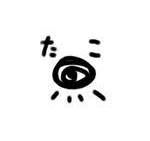

n-buna,ヨルシカ

- 1995年8月30日 - n-buna（本名:出羽良彰）生まれる。
- 2012年 - ボーカロイドを使用した楽曲「透明エレジー」を発表し、注目を集める。
- 2014年 - 初のソロアルバム「花と水飴、最終電車」をリリース。
- 2017年 - 女性ボーカリストsuisと共にヨルシカを結成。
- 2017年 - ヨルシカとして初のミニアルバム「夏草が邪魔をする」をリリース。
- 2018年 - ヨルシカのフルアルバム「だから僕は音楽を辞めた」を発表し、商業的な成功を収める。
- 2019年 - ヨルシカのアルバム「エルマ」をリリース。
- 2020年 - ヨルシカのアルバム「盗作」をリリース。
- 2021年以降 - ヨルシカとして国内外でのライブ活動を行う。